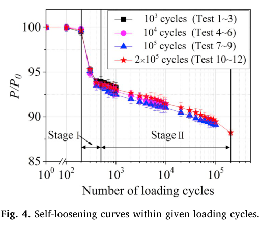

Zhang 2019 — estudo de caso— case study
Figura do artigoPaper figure

Figura(s) originais do artigo (recorte do PDF) — a fonte dos pontos que foram digitalizados.Original figure(s) from the paper (PDF crop) — the source of the digitized points.
Condições do ensaioTest conditions
| ReferênciaReference | Zhang, Zeng, Lu, Zhang, Wang & Xu (2019). Eng. Fail. Anal. 104:341-353 · doi:10.1016/j.engfailanal.2019.05.001 |
| ParafusoBolt | M12x1.75 |
| Pré-carga F0Preload F0 | 10 kN |
| AmplitudeAmplitude | ±0.20 mm |
| FrequênciaFrequency | 10 Hz |
| Família / nº de curvasFamily / curves | transverse · 4 |
| MAE medianomedian | 0.019 |
Informações do artigo — aparato, corpo-de-prova, matriz de ensaiosPaper information — apparatus, specimen, test matrix
Zhang, Lu, Wang & Zeng (2018, Wear) + Zhang, Zeng, Lu, Zhang, Wang & Xu (2019, EFA) — Thread-Wear-Driven Self-Loosening (experiment + FE companion pair)
Citations
- A (2018, "exp+basic FE"): Zhang, M., Lu, L., Wang, W., Zeng, D. (2018).
"The roles of thread wear on self-loosening behavior of bolted joints under transverse cyclic loading." *Wear* 394-395, 30-39. DOI: 10.1016/j.wear.2017.10.006. Received 4 Jul 2017 / revised 9 Sep 2017 / accepted 6 Oct 2017 / online 7 Oct 2017. Affiliation: State Key Laboratory of Traction Power, Southwest Jiaotong University (Chengdu) + CRRC Qishuyan Institute.
- B (2019, "exp+validated FE companion"): Zhang, M., Zeng, D., Lu, L.,
Zhang, Y., Wang, J., Xu, J. (2019). "Finite element modelling and experimental validation of bolt loosening due to thread wear under transverse cyclic loading." *Engineering Failure Analysis* 104, 341-353. DOI: 10.1016/j.engfailanal.2019.05.001. Received 4 Jan 2019 / revised 21 Mar 2019 / accepted 1 May 2019 / online 2 May 2019. Affiliation: same Southwest Jiaotong University lab + CRRC Qingdao Sifang + Chengdu Technology University.
- Both corresponding-authored by Dongfang Zeng (zengdongfang@swjtu.cn);
B's reference [9] cites A directly ("Zhang, Lu, Wang, Zeng... Wear 394-395 (2018) 30-39") — B is an explicit, self-declared companion/follow-up to A, not an independent group re-deriving the same idea.
Target limitation: L1 + L6, and why
L1 = thread-wear-driven self-loosening — the missing ∝-amplitude thread mechanism (per roadmap item 9: "mecanismo de perda dirigido pela amplitude axial (fretting/wear de flanco de rosca)... não é um tuner — é forma faltante"). This pair is the most direct evidence in the literature base that a bolted joint's clamping force can decay purely from fretting wear at the thread flanks, with zero net nut rotation, driven by the local relative slip that a transverse (shear) excitation imposes at the thread-thread interface — exactly the missing causal chain V2's engine does not yet represent (WearLoss in dynamic_stiffness_analyzer.py is driven by transverse bearing/plate slip, not thread-flank slip under axial/rotational excitation).
L6 = thread-pair wear coefficient. Both papers report an explicit numeric wear coefficient used to drive their respective FE wear laws — Paper A's Archard K/H and Paper B's Fouvry-style energy coefficient α — for essentially the same underlying steel-on-steel thread pair (35CrMo/SCM435, both Cr-Mo through-hardening alloy steels, ~0.35%C). This is a rare case in the base where a directly usable, provenance-traceable k_wear_spec-class number exists for a thread contact specifically (as opposed to the bearing/plate contacts most of the library's K_archard anchors describe) — see KEY below for the number and its cross-check.
What it is
- Paper A (2018, Wear): (1) an experimental interrupted-test campaign
(16 tests) on a real M12 bolted joint under transverse cyclic displacement, with SEM/EDX thread-surface forensics identifying the wear MECHANISM (oxidative + delamination + fatigue wear = classic fretting wear signature); (2) a basic 3-D elastic FE model (ANSYS) that computes Archard wear DEPTH at the thread from the FE-derived pressure/slip history, but is only qualitatively cross-checked against the experimental trends (preload → less wear; more wear with cycles) — it does not simulate the preload-loss curve itself or compare predicted vs. measured wear PROFILES numerically.
- Paper B (2019, EFA): a new, independent interrupted-test campaign
(12 tests, different bolt material/preload/plate geometry than A) that additionally measures the thread wear PROFILE directly (confocal laser microscopy, crest-to-root) at two circumferential positions, PLUS a substantially more sophisticated elastic-plastic FE model with energy-based (Fouvry) adaptive-remeshing wear simulation (ABAQUS UMESHMOTION) that is quantitatively validated against both the measured wear-depth profile (Fig. 13) and the Stage-II (wear-only) portion of the preload-loss curve (Fig. 16) — i.e. B closes the loop A left open. B explicitly states its own model over-predicts wear/preload-loss because it does not account for wear-debris accumulation (see Nuances).
Apparatus (bolt spec, rig, matrix)
| Paper A (2018) | Paper B (2019) | |
|---|---|---|
| Bolt/nut | M12×1.75×100mm hex, Class 10.9, 35CrMo steel (bolt+nut) | M12×1.75×100mm hex, SCM435 steel (bolt+nut), machined by milling; E=208GPa, Sy=705MPa, Su=989MPa, elong. 4.8% |
| Nut type | Nylon-insert prevailing-torque nut (T_p≈10 N·m avg. prevailing torque) | Plain hex nut (no locking feature — not stated as prevailing-torque) |
| Plates | 2× AISI 1045 steel, 15mm + 15mm; load cell 16.3mm | 2× AISI 1045 steel, upper 15mm / bottom 40mm; load cell 16.3mm |
| Clamped length | not stated explicitly | 73mm (5 bolt threads / 4 nut threads, 4 engaged) |
| Anti-wear on plate-plate contact | 2× Ø3mm rollers in 25×10×1.4mm slots + solid lubricant, µ≈0.02 | same roller geometry, solid grease, µ≈0.0005 (FE input) |
| Rig | Shimadzu EHF-UV200k2 servo-hydraulic fatigue tester, transverse (shear) displacement control | Shimadzu servo-hydraulic fatigue tester (model not restated), same principle |
| Displacement amplitude | 0.25mm (single value, no sweep) | 0.2mm (single value — chosen as the boundary: >0.2mm → bolt fatigue fracture; <0.2mm → no distinct thread wear) |
| Frequency | 10Hz (single value) | 10Hz (= tester's max; chosen because "bolt loosening is independent of loading frequency" per Junker 1969) |
| Preload(s) | 14, 20, 26 kN (main sweep, Tests 5-13) + thread-locker sub-study at 20kN (Tests 14-16) + 4 interrupted tests at 20kN (Tests 1-4) | 10 kN only (= 95MPa tensile stress = 13.5% Sy; deliberately LOW, chosen because lower preload → more distinct/measurable wear profile) |
| Interrupted-test cycle counts | 10³, 10⁴, 10⁵, 5×10⁵ (+ full tests to 10⁶) | 10³, 10⁴, 10⁵, 2×10⁵ |
| Repeats per condition | 3 | 3 |
| Rotation sensor | yes — zero rotation measured in every test | yes, higher-res (0.045° resolution) — zero rotation measured in every test |
| Thread/underhead friction (DIN 946 back-calc) | µt≈µh≈0.2 (used in FE) | mean 0.241 (Table 2, range 0.228-0.251; used in FE) |
| Torque-preload eq. | DIN 946 (Eq. 1, both papers, identical form) | same |
| FE software | ANSYS 14.0, augmented-Lagrangian contact, elastic-only materials, SOLID185 (thread)/SOLID45 (rest), 80546 nodes/58484 elements | ABAQUS, penalty contact (Lagrange multiplier tried first, didn't converge), elastic-plastic kinematic-hardening bolt/nut, C3D8, 432529 nodes/390624 elements, Fukuoka helical-thread meshing method |
| Preload application (FE) | thermal expansion trick, α_T=1.5e-5/°C on the bolt, z-dir | thermal expansion trick, α_T=1.5e-5/°C on the load cell, z-dir (same trick, different component thermally loaded) |
| Wear law (FE) | Archard, w=Σ(K/H)·0.5(p_i+p_i+1)·(s_i+1−s_i) (Eq. 2) | Energy-based (Fouvry), V=α·ΣQ_i·S_i → dh(x)=α·q(x)·ds(x), adaptive remeshing via UMESHMOTION, cycle-jump ΔN=5000, 50 increments/cycle, 73µm thread mesh, 0.0004mm max elastic slip tolerance (all 4 optimised in the paper's own sensitivity study, Figs. 9-11) |
KEY: wear coefficient, preload-loss law, amplitude-scaling verdict
Wear coefficient (L6) — two formulations, same underlying material system, and they are numerically consistent with each other:
- Paper A (Archard):
K/H = 0.834×10⁻⁸ MPa⁻¹= 8.34×10⁻¹⁵ Pa⁻¹
(= 8.34×10⁻⁹ mm²/N). Sourced from fretting-wear tests on 35CrMo steel under gross slip (ref. [21]: Wang, Liang, Song, Yi, *Heat Treat. Met.* 39(3) 2014, 141-144) — i.e. this is a literature-anchored, not fitted, constant, for the same bolt/nut material used in this paper's own rig. This maps directly onto BAS V2's canonical k_wear_spec = K/H [1/Pa] (merge §4.42a) — k_wear_spec_thread ≈ 8.34e-15 Pa⁻¹ for a 35CrMo-on-35CrMo thread pair, dry-ish (solid-lubricant only on the plate-plate interface, NOT the thread), gross-slip fretting regime.
- Paper B (energy-based/Fouvry):
α = 4.17×10⁻⁸, text does not restate
units, but dimensional analysis of the paper's own Eq. 6 (dh[m] = α·q[Pa]·ds[m]) shows α must carry units of inverse pressure — same family as Archard's K/H (α in MPa⁻¹ ⇒ 4.17×10⁻⁸ MPa⁻¹ = 4.17×10⁻¹⁴ Pa⁻¹). Sourced from "fretting wear tests carried out for SCM435 steel using a ball-flat configuration" citing ref. [42], whose OWN reference-list entry is the identical Wang et al. (2014) 35CrMo paper cited by Paper A's ref. [21] — i.e. both papers anchor their wear coefficient to the exact same source experiment, just expressed in two different wear-law conventions.
- Cross-check (not stated in either paper, derived here): for
stick-slip fretting, local shear stress q ≈ µ·p (local normal pressure), so the two formulations should satisfy α ≈ (K/H)/µ. Using Paper A's own FE friction coefficient µ=0.2: (K/H)/µ = 0.834e-8/0.2 = 4.17e-8 — an exact match to Paper B's stated α. This is almost certainly not a coincidence (same lab, overlapping authors, same source experiment) but it is a genuine, non-trivial internal-consistency check that both wear-law conventions describe the same physical wear rate for this thread pair, and it gives V2 a validated conversion k_wear_spec = α·µ (or α = k_wear_spec/µ) if the energy-based form is ever preferred over Archard's.
Preload-loss law — 2-stage, NOT a single decay law:
Both papers describe (B, explicitly, per its Fig. 4 "Stage I"/"Stage II" annotation) the SAME qualitative shape also seen in A's data: (1) an initial transient (≈first 200 cycles, negligible loss — the test machine ramping up to the preset displacement), (2) Stage I — a rapid loss from ≈200-500 cycles attributed to cyclic plasticity at the thread roots (citing Jiang et al. 2003/2004, not this pair's own mechanism), and (3) Stage II — a slow, log-linear-in-cycles loss attributed entirely to fretting wear (this pair's own contribution), continuing to 10⁵-10⁶ cycles with a continuously DECREASING rate (attributed qualitatively to wear-debris accumulation partially re-filling the wear gap and separating the thread flanks — see Nuances). Paper B quantifies the split for its own rig: of the ≈12% total loss at 2×10⁵ cycles, Stage I and Stage II each account for ≈6% (i.e. roughly HALF the total loss, even though Stage I lasts only ~300 cycles vs. Stage II's ~2×10⁵) — thread wear is a slow but NOT negligible fraction of total preload loss in this regime.
Amplitude-scaling verdict — asserted by the wear-law FORM, NOT swept experimentally: Neither paper varies the imposed transverse displacement amplitude — A fixes it at 0.25mm, B at 0.2mm (chosen as the practical window between "no visible wear" below and "bolt fatigue fracture" above). So this pair cannot directly confirm an amplitude-scaling exponent. What it DOES provide: 1. Both adopted wear laws (Archard: K/H·p·Δs; energy-based: α·q·Δs) are linear in the incremental sliding distance Δs, which is set by the imposed relative-displacement history at the thread contact — i.e. the wear-rate-∝-amplitude scaling is baked into the model's mathematical form, not an empirical finding of this specific pair. 2. Indirect experimental support exists via the preload sweep at FIXED displacement amplitude (Paper A, Figs. 20-22): increasing preload 14→26kN reduces the LOCAL relative slip at the thread interface (through better bearing/plate-plate load transfer), and wear/loosening drop correspondingly (Fig. 19) — i.e. wear responds monotonically to local slip magnitude, the same causal variable a true displacement- amplitude sweep would vary directly, just varied here through a different control knob (preload, not amplitude). 3. Net verdict for L1: this pair supplies the missing mechanism (thread fretting wear, ∝ local slip distance, wear coefficient provenance-traceable) but NOT an independently confirmed amplitude exponent — implementing an amplitude-driven thread-wear term in V2 from this pair alone means importing the Archard/energy-based FORM (linear-in-slip) as a structural assumption, not a fitted/verified power law from a swept dataset.
Nuances
- **Loosening WITHOUT nut rotation — confirmed twice, independently, with
DIFFERENT nut hardware. Paper A used a nylon-insert prevailing-torque nut (which has its own rotational resistance and so is a somewhat "loaded" test of the no-rotation claim); Paper B used a plain hex nut with NO locking feature and a higher-resolution rotation sensor (0.045° vs. unspecified in A) and STILL measured exactly zero rotation in every test. B's plain-nut result is the cleaner** confirmation — there is no prevailing-torque mechanism available to "explain away" the absence of rotation, so the preload loss genuinely occurs through a gap forming at the worn thread flanks (a δ_emb-like, amplitude/slip-driven channel), not through any rotational back-off.
- **Wear-debris accumulation is the acknowledged, unmodeled reason BOTH
papers' pure-mechanics predictions run ahead of what's measured. Paper A's narrative explanation for the continuously DECREASING self-loosening RATE (visible in Fig. 2/13/16, cycles 500→10⁶) is that accumulating red-brown oxide wear debris (confirmed by EDX, "O" signal strengthening with cycles) partially re-fills the wear gap and separates the thread flanks, reducing further wear — a self-limiting, saturating mechanism. Paper B makes this quantitative: its energy-based FE model (which cannot represent debris pile-up) systematically over-predicts both wear depth and preload loss relative to experiment (Fig. 13, Fig. 16) — the gap is attributed explicitly to this un-modeled debris effect. This is directly analogous to V2's own surface_damage "wear debris fills gap / modulates friction" philosophy, but INVERTED in sign: here debris suppresses further loss (protective), whereas V2's D currently only amplifies** wear/lowers friction. A debris-protective term (rate decreasing in accumulated wear/debris volume) is a candidate new form, not currently represented.
- Thread locker (Paper A only, 3M TL43, Tests 14-16 @ 20kN): works
through a DIFFERENT physical channel than preload increase — it separates the thread flanks and prevents relative slip entirely (rather than reducing slip magnitude via better load transfer), so the wear debris/delamination signatures seen without locker are absent with locker (SEM/EDX, Fig. 15). Both curves have the same loosening RATE for the first ~1000 cycles (Stage I, plasticity-dominated, locker cannot help there) and only diverge in Stage II — direct evidence that Stage I and Stage II really are separate mechanisms with separate intervention points.
- The two papers are NOT a strict single-rig replication — different
bolt material (35CrMo vs. SCM435 — metallurgically close but not identical; Paper B's in-text attribution of α to "SCM435 steel" while its own reference [42] title says "35CrMo steel" is an internal labeling inconsistency, not resolved in the text), different preload (14-26kN vs. 10kN only), different displacement amplitude (0.25 vs. 0.2mm), different plate thickness (bottom plate 15mm vs. 40mm). Treat the pair as "two related rigs measuring the same MECHANISM," not as a single calibration dataset with two redundant measurements.
- **Fig. 19 (Paper A) wear-vs-angle data is for the 3rd loading cycle
ONLY** (a single-cycle FE wear-RATE snapshot at varying circumferential position, not an accumulated depth vs. cycle-count curve) — kept here as a supplementary per-cycle-increment dataset (zhang18_fig19_*, units w/1e-8 mm per the paper's own axis label), useful for the preload-dependence of the instantaneous wear rate, NOT for the cycles-axis requested for the primary deliverable.
- Position A vs. Position B (Paper B only, Fig. 2 of that paper): the
thread wear depth is larger at Position A (θ=0°) than Position B (θ=90°), consistent with Paper A's circumferential-position FE finding (Fig. 19-22) that slip/pressure — and hence wear — vary non-uniformly around the thread circumference, tied to the fixed direction of the applied transverse load relative to the (also fixed) thread helix starting phase. This work digitized Position A (bolt) only (the paper's own primary/most-cited position, and the one used for all the FE parameter-optimization studies, Figs. 9-11) — Position B and the nut-side profiles (Fig. 6b/c/d, Fig. 12b/c/d) exist in the paper but were not separately digitized (same qualitative shape, smaller magnitude).
Conclusions (papers' own)
Paper A: (1) without nut rotation, self-loosening under transverse cyclic loading can be caused by thread fretting wear; (2) fretting wear severity increases with cycles, gradually reducing clamping force; (3) increasing preload alleviates thread wear by reducing thread relative slip, improving anti-loosening ability — but at the cost of higher mean stress, risking fatigue fracture (observed once, Test 12, 26kN, 785,612 cycles); (4) thread locker gives the best anti-loosening performance by preventing thread relative slip and separating the flanks entirely.
Paper B: (1) an FE model incorporating wear-PROFILE evolution (energy-based, adaptive remeshing) successfully reproduces the mechanism by which fretting wear reduces clamping force — via changing thread contact stress distribution/magnitude; (2) predicted and measured wear-profile and clamping-force TRENDS agree well, but the FE systematically over-predicts MAGNITUDE because wear-debris accumulation isn't modeled; (3) fretting wear increases sliding distance along the thread's radial direction, which further changes the wear-depth distribution (a self-reinforcing/evolving contact-stress redistribution, not a fixed wear pattern); (4) the validated FE approach is proposed as a design tool for optimizing thread pitch, fit, and hole clearance, particularly valuable for large bolts where physical interrupted-test campaigns are impractical.
Curve/table inventory
All CSVs in digitized_csv/, prefix zhang18_=Paper A (Wear 2018), zhang19_=Paper B (EFA 2019). Preload-loss curves use header cycle,F_over_F0 (fraction, x=cycle count). Wear-profile/other curves use an explicit x,y header with stated units. Pixel color-tracing (PIL/numpy, marker-blob erosion for discrete-marker plots; column-median tracing for dashed/dotted continuous curves) was used throughout; calibration verified against each paper's own exact tabulated values (Table 1 / Table 2) at matching cycle counts — typical agreement ±0.1-0.5 percentage points on P/P0.
| File | Source fig. | x [unit] | y [unit] | Exp/FE | #pts | Notes |
|---|---|---|---|---|---|---|
zhang18_fig2_test{1..4}_20kN_*cyc_preload_vs_cycles.csv | Fig. 2 | cycle | F/F0 | Exp | 9,14,16,41 | Individual interrupted tests 1-4, all 20kN, terminated at 10³/10⁴/10⁵/5×10⁵ resp. |
zhang18_fig13_{14,20,26}kN_preload_vs_cycles.csv | Fig. 13 | cycle | F/F0 | Exp | 18,21,17 | 3-repeat means (error bars not digitized); validated vs. Table 1 group means within ≤0.5pp |
zhang18_fig16_{with,without}_locker_preload_vs_cycles.csv | Fig. 16 | cycle | F/F0 | Exp | 21,20 | "without_locker" = same underlying Test5-7 as fig13_20kN (independent re-digitization; the two agree within ~0.1pp — cross-validation) |
zhang18_fig19_wear_per_cycle_vs_angle_{14,20,26}kN.csv | Fig. 19 | angle [deg] | wear increment, 3rd cycle only [mm] | FE | 13 each | NOT vs. cycles — single-cycle wear-rate snapshot vs. circumferential position; supplementary |
zhang18_table1_exact_checkpoints.csv | Table 1 (text) | cycle | F/F0 | Exp | 20 rows | Exact transcribed group-mean values at 10³/10⁴/10⁵/5×10⁵/10⁶ — precision anchor, not digitized |
zhang19_fig4_{1e3,1e4,1e5,2e5}cyc_Test*_preload_vs_cycles.csv | Fig. 4 | cycle | F/F0 | Exp | 6,17,29,38 | Full curve (Stage I + II), grouped by interrupted-test cycle count; 1e3 series is sparsest (shortest test, heaviest marker overlap with the other 3 series near the origin) |
zhang19_fig16_{EXP,FE}_stageII_rebased_preload_vs_cycles.csv | Fig. 16 | cycle since Stage-II onset (≈cycle 500 in Fig.4's absolute count) | F/F0, rebased to 1.0 at Stage-II onset | Exp + FE | 34 each | THE direct exp-vs-FE comparison, isolating pure fretting-wear loss (Stage I stripped out per the paper's own statement) |
zhang19_fig6a_wear_profile_{1e3,1e4,1e5,2e5}cyc_exp_PositionA_Bolt.csv | Fig. 6(a) | radial position [mm], x=0 at contact outer edge/crest, contact inner edge/root at x≈0.886mm | wear depth [mm] | Exp | 45,35,30,46 | Primary thread-wear-DEPTH dataset; log-scale y column-traced |
zhang19_fig12a_wear_profile_{1e3,1e4,1e5,2e5}cyc_FE_PositionA_Bolt.csv | Fig. 12(a) | same position convention as Fig.6a | wear depth [mm] | FE | 16 each | Direct FE counterpart to fig6a — discrete FE markers, marker-blob traced |
zhang19_max_wear_depth_vs_cycles_{exp,FE}_PositionA_Bolt.csv | derived from Fig.6a/12a | cycle | max (outer-edge) wear depth [mm] | Exp / FE | 4 each | Literal "wear-depth-vs-cycles" summary; only 4 points (the paper's 4 test cycle-counts, not a resolution limit of digitization); exp values are visual peak reads (edge obscured by the red reference line in Fig.6a), FE values are pixel-exact (isolable discrete markers in Fig.12a) |
zhang19_table2_exact_checkpoints.csv | Table 2 (text) | cycle | F/F0 | Exp | 4 rows | Exact transcribed group-mean values at 10³/10⁴/10⁵/2×10⁵ |
Not digitized: Fig. 3/5/7/8/10/14 (SEM/EDX/microscope images, no numeric curve), Fig. 9 (2018, transverse load vs. cycles — secondary to the L1/L6 ask), Fig. 11/12 (2018, thread/EDX images at varied preload), Fig. 9-11 (2019, FE parameter-optimization sensitivity studies — mesh size/increments/cycle-jump/slip-tolerance vs. predicted wear depth; fully qualitative "converges by X" statements, no target curve), Fig. 6(b/c/d) and Fig. 12(b/c/d) (2019, Position B / nut wear profiles — same mechanism, smaller magnitude, not separately digitized per Nuances), Fig. 13/14/15 (2019, profile-shape comparison plots and contact-variable distributions — qualitative/illustrative, no new scalar).
V2 mapping
- This pair supplies the missing L1 FORM candidate: a thread-flank
fretting-wear term whose rate is ∝ (K/H or α) × contact pressure × incremental thread-flank slip distance (Archard or energy-based, cross-consistent per KEY above), separate from V2's existing WearLoss (which models transverse bearing/plate slip, not thread-flank slip) and separate from EmbeddingLoss/CreepLoss. Both papers' mechanism is active without the RotationalLoosening channel firing at all (zero measured rotation) — i.e. this is evidence for a new, independent dF₀ contributor, not a re-parameterization of an existing mechanism.
k_wear_specthread-pair anchor:8.34×10⁻¹⁵ Pa⁻¹(35CrMo/SCM435
steel-on-steel thread, dry/solid-lubricant-adjacent, gross-slip fretting regime), directly usable in V2's k_wear_spec = K/H convention (merge §4.42a) if/when a thread-flank wear channel is implemented — but this is a per-pair constant (same caveat as every other K_archard/k_wear_spec anchor in the library: "forms transfer cross-rig, constants don't," per MODEL_LEGITIMACY.md §8) and should NOT overwrite the âncora interna rig's bearing-contact k_wear_spec/K_archard defaults — it is a candidate value for a NEW thread-flank channel specifically.
- **2-stage preload-loss shape (rapid-plasticity-Stage-I then
slow-wear-Stage-II, with a DECREASING Stage-II rate attributed to debris self-limiting) is structurally identical to V2's existing Stage I/II/III segmentation philosophy (calibration/segmentation.py) and to the qualitative shape already captured by EmbeddingLoss (fast initial settling) + a wear channel (slow tail) — but the debris self-limiting/protective** aspect (wear RATE decreasing as debris accumulates, not just as F_0 or contact area decreases) is NOT currently represented by any V2 mechanism; surface_damage only AMPLIFIES wear/lowers friction as D grows, the opposite sign from what this pair describes for thread wear debris specifically.
- **Amplitude-scaling is asserted by the wear-law form, not empirically
swept in this pair (see KEY) — if a thread-flank wear term is implemented using this Archard/energy-based form, the linear-in-slip behavior is a structural import**, not a value independently fitted to a displacement-amplitude sweep; a genuine amplitude-sweep dataset (fixed preload, several transverse displacement amplitudes, thread wear measured) would be needed to confirm the exponent empirically.
- Loosening-without-rotation, confirmed with a PLAIN nut (Paper B),
reinforces that V2's existing RotationalLoosening mechanism should legitimately show zero contribution in a pure-transverse, gross-slip- free (thread-locked or well-clamped) regime, with essentially ALL of the loss routed through embedding + the (currently missing) thread-wear channel — a useful regime-identification test case for the parameter_registry.py activation logic (LoadingRegime) if/when a thread-flank wear mechanism is added as a candidate.
Caveats
- Neither paper's preload range/geometry matches the âncora interna M16 rig — M12
bolts, 10-26kN preloads (vs. âncora interna's M16, ~50kN-scale), 0.2-0.25mm transverse amplitude (vs. âncora interna's ±0.5mm). Per the project's repeated finding ("forms transfer cross-rig, constants don't"), only the MECHANISM and the wear-law FORM should be imported; the specific k_wear_spec number above is a same-material-family anchor, not a universal constant.
- **Digitization is pixel-color-tracing off 200-400dpi PDF page
renders (no source data files) — preload-loss curves validated against each paper's own exact Table 1/Table 2 checkpoint values (typically agreeing within ±0.1-0.5 percentage points of P/P0, see the _exact_ checkpoints.csv files), so those are high-confidence. The wear-DEPTH profile curves (Fig. 6a/12a, log-scale y) have no equivalent tabulated cross-check and are visual/pixel reads only, typical precision estimated at ±5-15%** given the log-scale compression at low values and dashed/ dotted line style in the experimental panel (vs. cleaner discrete markers in the FE panel).
- **
zhang19_fig4_1e3cycseries is unusually sparse (6 pts incl. the
defined origin)** — the black (10³-cycle) curve is heavily occluded by the other 3 series drawn on top of it near the shared origin/early cycles in Fig. 4's crowded multi-series overlay; only points where the black marker was NOT occluded could be reliably isolated.
- **
zhang19_max_wear_depth_vs_cycles_expvalues are visual estimates,
not pixel-exact** — the true contact-outer-edge (x=0) data point in Fig. 6a sits directly under/beside the red "Contact outer edge" reference line and could not be color-isolated as cleanly as in Fig. 12a's discrete-marker FE panel (see inventory table). Treat these 2 values (1e5/2e5 rows) as ±20-30% qualitative anchors, not calibration-grade numbers; the FE-side companion values (_FE_) ARE pixel-exact. Similarly the two "peak" values used to seed fig12a_1e3/fig12a_1e4/ fig12a_1e5/fig12a_2e5's first row (x≈0) required a dedicated narrow-window pixel search distinguishing overlapping marker outline vs. fill colors (magenta/blue markers share a boundary at x=0) — flagged inline in the generation script, not visually re-verified point-by-point after the fact.
- **Paper B's own in-text attribution of
αto "SCM435 steel" conflicts
with its cited reference [42]'s title ("35CrMo steel")** — both papers ultimately point to the same Wang et al. (2014) source; treated here as the same underlying material system (SCM435 ≈ 34CrMo4/35CrMo-class Cr-Mo alloy steel), not independently re-verified against the original 2014 paper (not in this library).
- **The
α ≈ (K/H)/µcross-check in KEY is derived here, not stated by
either paper** — dimensionally sound and numerically exact using each paper's own reported µ, but should be read as a plausibility check on internal consistency between the two papers' wear coefficients, not as an independent third data point.
- Fig. 19's per-cycle wear values (
w, unit1e-8 mm) are extremely small
(single-cycle increments, ~5-8×10⁻⁸mm) — consistent with accumulating to the observed ~10⁻³-10⁻² mm depths only after 10⁵-10⁶ cycles of a DECREASING rate (debris self-limiting, see Nuances); do not linearly extrapolate Fig. 19's single-cycle rate to a multi-cycle depth without accounting for that saturation.
Modelo vs dadoModel vs data
Cada card = uma curva digitalizada deste estudo: a linha é a previsão do modelo (config adotada, do store canônico) e os pontos são o dado medido; o badge traz o MAE.Each card = one digitized curve from this study: the line is the model prediction (adopted config, from the canonical store) and the dots are the measured data; the badge shows the MAE.
ReprodutibilidadeReproducibility
Cada card tem ↓ CSV (modelo + dado da curva). Os CSVs digitalizados originais ficam em Models/CALIBRATION_AND_VALIDATION/curve_library/digitized_csv/; a curva do modelo vem do store canônico (config adotada por fonte). Para reproduzir localmente:Each card has ↓ CSV (curve model + data). The original digitized CSVs live in Models/CALIBRATION_AND_VALIDATION/curve_library/digitized_csv/; the model curve comes from the canonical store (adopted per-source config). To reproduce locally:
Ver também o guia de uso do programa e a metodologia.See also the program usage guide and the methodology.